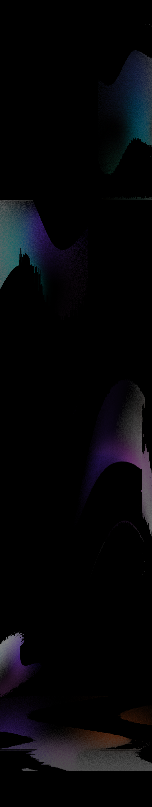
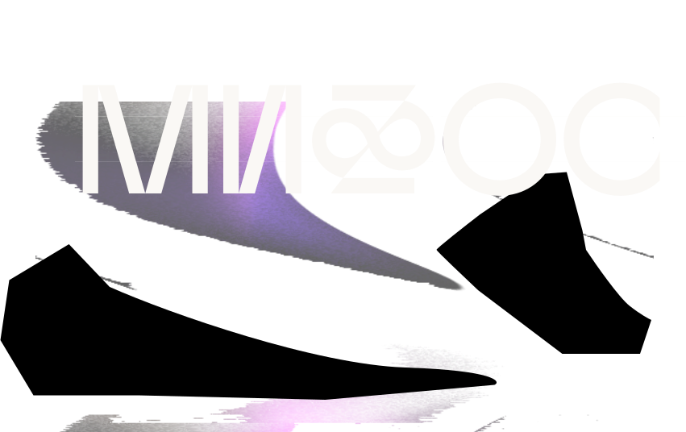
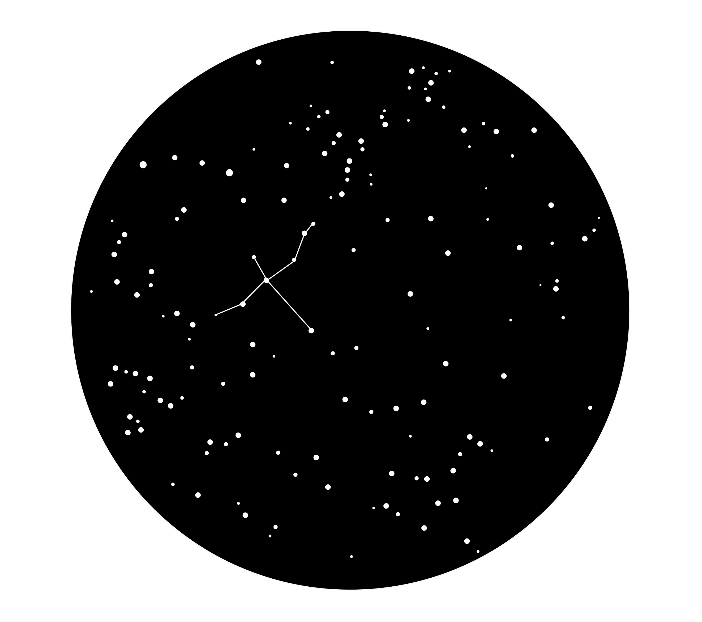
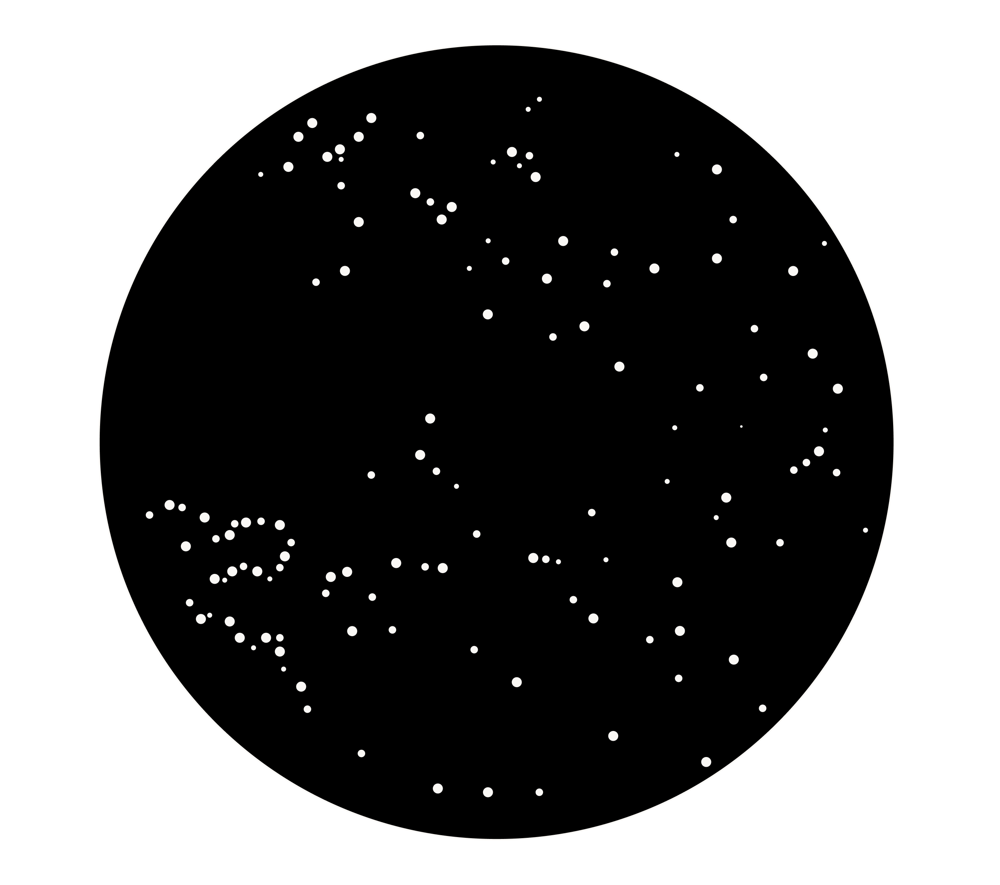
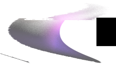

<!DOCTYPE html>
<html lang="ru" dir="ltr">
  <head>
    <meta charset="utf-8" />
    <meta name="viewport" content="width=device-width, initial-scale=1" />
    <title>Мифос</title>
    <link rel="icon" href="./images/favicon about.ico" type="image/x-icon" />
    <!-- Primary Meta Tags -->
    <meta name="title" content="Мифос" />
    <meta
      name="description"
      content="мифос — это медиа о созвездиях, соединяющее в себе карту звездного неба и древнегреческие легенды о возникновении созвездий."
    />

    <!-- Open Graph / Facebook -->
    <meta property="og:type" content="website" />
    <meta property="og:title" content="Мифос" />
    <meta
      property="og:description"
      content="мифос — это медиа о созвездиях, соединяющее в себе карту звездного неба и древнегреческие легенды о возникновении созвездий."
    />
    <meta property="og:image" content="./images/shareImage/index_share.png" />

    <!-- Twitter -->
    <meta property="twitter:card" content="summary_large_image" />
    <meta property="twitter:title" content="мифос — мифология созвездий" />
    <meta
      property="twitter:description"
      content="мифос — это медиа о созвездиях, соединяющее в себе карту звездного неба и древнегреческие легенды о возникновении созвездий."
    />
    <meta
      property="twitter:image"
      content="./images/shareImage/index_share.png"
    />
    <!-- <meta property="twitter:image" content="./images/preview.png" /> -->
    <analytics></analytics>
  </head>
  <body class="index">
    <!-- 
    <a name="top"></a>

    <div class="menulogo">
      <div class="logo"><a href="#top">МИфОС</a></div>
    </div>

    <div class="stars1">
      
      
    </div>

    <div class="">
      
    </div>

    <div class="divbiglead">
      <p class="biglead">
        Мифос&nbsp;&mdash; сборник созвездий для интересующихся космосом
        и&nbsp;древнегреческой мифологией, которое проведёт вас по&nbsp;карте
        ночного неба.
      </p>
    </div>

    <div class="forh2">
      <h2>дЛЯ кОГО</h2>
    </div>

    <div class="mainwho">
      <div class="who">
        <div class="photoabout">
          <div class="photo">
            
          </div>
          <div class="about">
            <h3>рИТа</h3>
            <p class="lead">19 лет,студент</p>
          </div>
        </div>
        <div class="text">
          <p>
            Учась на&nbsp;дизайнерском факультете, я&nbsp;часто испытываю
            выгорание и&nbsp;усталость. Мифос помогает мне воодушевиться
            на&nbsp;новые проекты, поверить в&nbsp;свои силы и&nbsp;загореться
            дизайном снова.
          </p>
        </div>
      </div>

      <div class="who">
        <div class="photoabout">
          <div class="photo">
            
          </div>
          <div class="about">
            <h3>аЛекСандр</h3>
            <p class="lead">21 год, студент</p>
          </div>
        </div>
        <div class="text">
          <p>
            Увлекаюсь мифологией и&nbsp;космосом. Мы&nbsp;с&nbsp;моей девушкой
            любим смотреть на&nbsp;звёздное небо в&nbsp;нашем родном городе. Мне
            хочется удивить её&nbsp;легендами о&nbsp;её&nbsp;знаке зодиака
            и&nbsp;мифами об&nbsp;остальных созвездиях.
          </p>
        </div>
      </div>
    </div>

    <div class="divbiglead div2">
      <p class="biglead">
        Мы&nbsp;подходим любому возрасту: нас читают любопытные студенты,
        взрослые люди, которым нужен отдых от&nbsp;рутины.
      </p>
    </div>

    <div class="mainwho two">
      <div class="who">
        <div class="photoabout">
          <div class="photo">
            
          </div>
          <div class="about">
            <h3>ИрИна</h3>
            <p class="lead">26 лет, трудоголик</p>
          </div>
        </div>
        <div class="text">
          <p>
            Я&nbsp;работаю в&nbsp;банке и&nbsp;устаю от&nbsp;повседневных задач.
            Иногда хочется отвлечься и&nbsp;ненадолго окунуться
            в&nbsp;мифический мир космоса. Мифос помогает мне разгрузиться после
            тяжелого дня и&nbsp;вносит в&nbsp;мою жизнь немного магии.
          </p>
        </div>
      </div>

      <div class="who">
        <div class="photoabout">
          <div class="photo">
            
          </div>
          <div class="about">
            <h3>анна</h3>
            <p class="lead">32 года, мама</p>
          </div>
        </div>
        <div class="text">
          <p>
            Я&nbsp;мама маленького ребенка. На&nbsp;ночь мы&nbsp;слушаем сказки,
            но&nbsp;иногда хочется разнообразить вечер и&nbsp;прочитать что-то
            легкое и&nbsp;понятное, но&nbsp;в&nbsp;то&nbsp;же время
            образовательное. Благодаря Мифосу мы&nbsp;с&nbsp;дочкой вместе
            путешествуем по&nbsp;ночному небу и&nbsp;открываем новые созвездия!
          </p>
        </div>
      </div>
    </div>

    <div class="maininfo">
      <div class="info">
        <p class="lead">
          Мифос воодушевляет на&nbsp;изучение космоса и&nbsp;вносит в&nbsp;жизнь
          немного волшебства.
        </p>
      </div>
      <div class="info">
        <p class="lead">
          Мифос делает мифологию интересной и&nbsp;влюбляет в&nbsp;себя.
        </p>
      </div>
    </div>

    <div class="forh2">
      <h2>СОЗвеЗдИя</h2>
    </div>

    <div class="groupsofstar">
      <div class="group1"></div>
      <div class="group2"></div>
      <div class="group3"></div>
      <div class="group4"></div>
      <div class="group5"></div>
    </div>

    <div class="divbiglead two">
      <p class="biglead">
        В&nbsp;Мифосе можно найти раздел мифологии зодиакальных созвездий.
      </p>
    </div>

    <div class="mainzodiaks">
      <div class="map"></div>
      <div class="info2">
        <div class="info two">
          <p class="lead">
            Кроме мифологии знаков в&nbsp;разделе даётся информация
            о&nbsp;местоположении созвездия в&nbsp;косическом пространстве.
          </p>
        </div>
        <div class="textbetony">
          <p class="betony">н</p>
          <p>
            аходится созвездие Льва в&nbsp;северном полушарии, между созвездиями
            Девы и&nbsp;Рака. Также Лев относится к&nbsp;зодиакальному кругу
            и&nbsp;находится вдоль эклиптики, то&nbsp;есть на&nbsp;звёздном пути
            Солнца, которое наше светило совершает на&nbsp;протяжении года.
            Также созвездие Льва располагается по&nbsp;соседству с&nbsp;другими
            известными соседями: созвездиями Большой Медведицы, Гидры, Рыси,
            Вероники и&nbsp;уже упомянутых Девы и&nbsp;Рака.
          </p>
        </div>
      </div>
    </div>

    <div class="forh3">
      <a href="#"><h3>УЗнаТь ЛеГендУ Льва</h3></a>
    </div>

    <div class="divbiglead div2">
      <p class="biglead">
        Интерактивная карта двух полушарий: северного и&nbsp;южного.
        Её&nbsp;можно найти в&nbsp;разделе &laquo;Созвездия&raquo;.
      </p>
    </div>

    <div class="spheres">
      <div class="sphere one"></div>
      <div class="sphere"></div>
    </div>

    <div class="names">
      <div class="name one">
        <h3>СевернОе неБО</h3>
      </div>
      <div class="name">
        <h3>южнОе неБО</h3>
      </div>
    </div>

    <div class="divsmall">
      <p class="small">
        На данный момент раздел находится в стадии разработки
      </p>
    </div>

    <div class="divbigleadthree">
      <p class="biglead">
        В&nbsp;Мифосе более 35&nbsp;созвездий и&nbsp;мифов
      </p>
    </div>

    <div class="maincontainer">
      <div class="text1">
        <p class="lead">
          12&nbsp;зодиакальных созвездий 16&nbsp;созвездий северного неба
          12&nbsp;созвездий южного неба
        </p>
      </div>

      <div class="textbetony">
        <p class="betony">в</p>
        <p>
          о Млечном пути 88 созвездий, однако только половина из них имеет
          мифологическую основу. В Мифосе ты сможешь прочесть все известные
          древнегреческие мифы созвездий.
        </p>
      </div>
    </div>

    <div class="maincontainer">
      <div class="img one">
        
      </div>
      <div class="img">
        
      </div>
    </div>

    <div class="maincontainertwo">
      <div class="one">
        <a href="#"><h3>УЗнаТь ЛеГендУ Лебедя</h3> </a>
      </div>
      <div class="two">
        <a href="#"><h3>УЗнаТь ЛеГендУ ЗаЙЦа</h3></a>
      </div>
    </div>

    <div class="divbiglead div2">
      <p class="biglead">
        Путешествуй с&nbsp;Мифос по&nbsp;мифологическому ночному небу
        и&nbsp;становись ближе к&nbsp;космосу и&nbsp;волшебству.
      </p>
    </div>

    <div class="forh4">
      <a href="https://t.me/spacegreekmyths"><h4>пОдпИСаТьСя</h4></a>
    </div>

    <div class="futer">
      <div class="block">
        
      </div>
      <div class="block">
        <p>
          <a href="https://linktr.ee/lyod" target="_blank">Демичева Лиза</a>
        </p>
        <p>
          <a href="https://portfolio.hse.ru/Student/17655" target="_blank"
            >Колодина Настя</a
          >
        </p>
        <p>
          <a href="https://t.me/spacegreekmyths" target="_blank"
            >Телеграм Мифоса</a
          >
        </p>
      </div>
      <div class="block">
        <p>При поддержке:</p>
        <p>Харитонов Захар</p>
        <p>Каем Каем</p>
      </div>
      <div class="block">
        <p>
          <a href="https://design.hse.ru/groups/7128" target="_blank"
            >б21дЗ08</a
          >
        </p>
        <p>hseadc</p>
        <p>2022</p>
      </div>
    </div> -->

    <!-- <a href="./myths/andromeda.html">andromeda</a>
    <br />
    <a href="./myths/aquarius.html">aquarius</a>
    <br />
    <a href="./myths/aries.html">aries</a>
    <br />
    <a href="./myths/big_dipper.html">big_dipper</a>
    <br />
    <a href="./myths/cancer.html">cancer</a>
    <br />
    <a href="./myths/capricorn.html">capricorn</a>
    <br />
    <a href="./myths/centaurus.html">centaurus</a>
    <br />
    <a href="./myths/cup.html">cup</a>
    <br />
    <a href="./myths/delphin.html">delphin</a>
    <br />
    <a href="./myths/dragon.html">dragon</a>
    <br />
    <a href="./myths/eagle_arrow.html">eagle_arrow</a>
    <br />
    <a href="./myths/gemini.html">gemini</a>
    <br />
    <a href="./myths/hare.html">hare</a>
    <br />
    <a href="./myths/hydra.html">hydra</a>
    <br />
    <a href="./myths/keel_feed_sail.html">keel_feed_sail</a>
    <br />
    <a href="./myths/libra.html">libra</a>
    <br />
    <a href="./myths/lion.html">lion</a>
    <br />
    <a href="./myths/north_crown.html">north_crown</a>
    <br />
    <a href="./myths/orion.html">orion</a>
    <br />
    <a href="./myths/perseus.html">perseus</a>
    <br />
    <a href="./myths/pisces.html">pisces</a>
    <br />
    <a href="./myths/raven.html">raven</a>
    <br />
    <a href="./myths/scorpio.html">scorpio</a>
    <br />
    <a href="./myths/strelec.html">strelec</a>
    <br />
    <a href="./myths/swan_and_lira.html">swan_and_lira</a>
    <br />
    <a href="./myths/taurus.html">taurus</a>
    <br />
    <a href="./myths/triangle.html">triangle</a>
    <br />
    <a href="./myths/veronica_hair.html">veronica_hair</a>
    <br />
    <a href="./myths/virgin.html">virgin</a>
    <br />
    <a href="./myths/voznichi.html">voznichi</a>
    <br />
    <a href="./myths/wolf.html">wolf</a>
    <br />
    <a href="./myths/zmeenosec.html">zmeenosec</a>
    <br /> -->
  </body>
</html>
